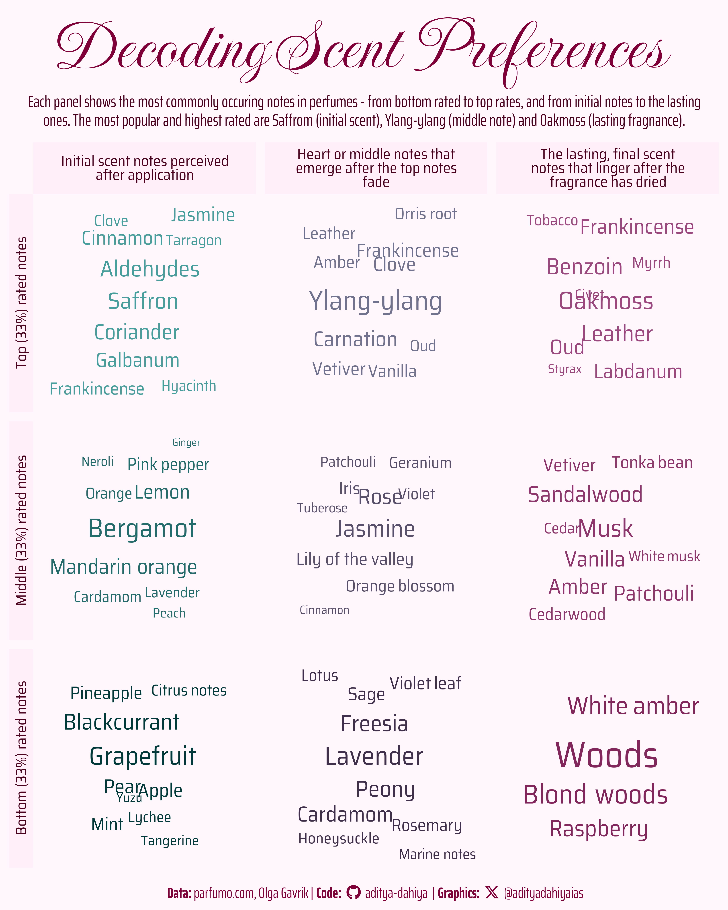

Faceted Word Clouds with {ggwordcloud}: Exploring Perfume Notes with Gradient Colors
Using {ggplot2} and {ggwordcloud}, this visualization combines faceted grids and a two-gradient color matrix to highlight scent note frequencies across perfume ratings and layers.
#TidyTuesday
{ggwordcloud}
colours
Author
Aditya Dahiya
Published
December 8, 2024
About the Data
The Parfumo Fragrance Dataset, curated for TidyTuesday, offers a deep dive into the world of perfumes, drawing on data sourced from Parfumo, a platform for fragrance enthusiasts. Webscraped by Olga G., the dataset she provides a detailed exploration of perfumes, including user ratings, olfactory notes (top, middle, and base), perfumers, and year of release.
Key features include variables such as the fragrance’s brand, release year, and concentration (e.g., Eau de Parfum or Eau de Toilette). Additionally, the dataset captures user interactions, with rating values and rating counts, and delves into the artistic composition of scents, highlighting the main accords and distinct olfactory layers (top, middle, and base notes). It also credits the perfumers behind these creations and provides direct links to Parfumo’s product pages.
During this process, I also learnt a new technique: This technique involves creating a visually appealing matrix of two-color gradients using R. It generates interpolated color transitions in horizontal and vertical directions, filling a matrix with blended colors. The gradient matrix is visualized using the image() function, and specific rows and columns are extracted for further visualization.

Figure 1: This word cloud visualization highlights the most popular scent notes in perfumes, categorized by user ratings (Top, Middle, and Bottom 33%) and scent layers (Top, Middle, and Base notes). Larger words represent notes that appear more frequently in each category. Horizontal facets show scent layers: initial notes, heart notes, and lasting base notes. Vertical facets group perfumes by rating tiers, revealing patterns in olfactory preferences across different rating levels.
How I made this graphic?
Loading required libraries, data import & creating custom functions.
Code
# Data Import and Wrangling Toolslibrary(tidyverse) # All things tidy# Final plot toolslibrary(scales) # Nice Scales for ggplot2library(fontawesome) # Icons display in ggplot2library(ggtext) # Markdown text support for ggplot2library(showtext) # Display fonts in ggplot2library(colorspace) # Lighten and Darken colourslibrary(patchwork) # Compiling Plotslibrary(grDevices) # Creating Colour Palettesparfumo_data_clean <- readr::read_csv('https://raw.githubusercontent.com/rfordatascience/tidytuesday/main/data/2024/2024-12-10/parfumo_data_clean.csv') |> janitor::clean_names()
Visualization Parameters
Code
# Font for titlesfont_add_google("Imperial Script",family ="title_font") # Font for the captionfont_add_google("Saira Extra Condensed",family ="caption_font") # Font for plot textfont_add_google("Saira Semi Condensed",family ="body_font") # Font for Wordcloudfont_add_google("Cookie",family ="wordcloud_font") mypal <-c("#990099", "#009900")showtext_auto()# A base Colourbg_col <-lighten("#FCAADEFF", 0.9)seecolor::print_color(bg_col)panel_col <-lighten("#FCAADEFF", 0.8)seecolor::print_color(panel_col)# Colour for highlighted texttext_hil <-"#7F0038FF"seecolor::print_color(text_hil)# Colour for the texttext_col <-darken("#7F0038FF", 0.5)seecolor::print_color(text_col)# Define Base Text Sizebts <-90# Caption stuff for the plotsysfonts::font_add(family ="Font Awesome 6 Brands",regular = here::here("docs", "Font Awesome 6 Brands-Regular-400.otf"))github <-""github_username <-"aditya-dahiya"xtwitter <-""xtwitter_username <-"@adityadahiyaias"social_caption_1 <- glue::glue("<span style='font-family:\"Font Awesome 6 Brands\";'>{github};</span> <span style='color: {text_hil}'>{github_username} </span>")social_caption_2 <- glue::glue("<span style='font-family:\"Font Awesome 6 Brands\";'>{xtwitter};</span> <span style='color: {text_hil}'>{xtwitter_username}</span>")plot_caption <-paste0("**Data:** parfumo.com, Olga Gavrik", " | **Code:** ", social_caption_1, " | **Graphics:** ", social_caption_2 )rm(github, github_username, xtwitter, xtwitter_username, social_caption_1, social_caption_2)# Add text to plot-------------------------------------------------plot_title <-"Decoding Scent Preferences"plot_subtitle <-"Each panel shows the most commonly occuring notes in perfumes - from bottom rated to top rates, and from initial notes to the lasting ones. The most popular and highest rated are Saffrom (initial scent), Ylang-ylang (middle note) and Oakmoss (lasting fragnance)."
New learning: Creating a combination of 2 colour gradients
Code
# Credits: Multiple attempts at ChatGPT, too (!)# Load necessary librarylibrary(grDevices)# Define the start and end colors for horizontal and vertical gradientscolor_horizontal <-c("#FCAADEFF", "#C31E6EFF") # Horizontal gradient colorscolor_vertical <-c("#6DCFCFFF", "#00393AFF") # Vertical gradient colors# Create color palettes for horizontal and vertical directionshorizontal_palette <-colorRampPalette(color_horizontal)vertical_palette <-colorRampPalette(color_vertical)# Define the dimensions of the matrixn_rows <-4n_cols <-4# Create a blank matrix to store colorscolor_matrix <-matrix("", nrow = n_rows, ncol = n_cols)# Populate the matrix with interpolated colorsfor (i in1:n_rows) { vertical_color <-vertical_palette(n_rows)[i] # Interpolated vertical color horizontal_gradient <-colorRampPalette(c(vertical_color, color_horizontal[2]))(n_cols) color_matrix[i, ] <- horizontal_gradient}# Visualize the matrix of colorsimage(1:n_cols, 1:n_rows, t(matrix(1:(n_rows * n_cols), ncol = n_cols)),col =as.vector(t(color_matrix)), axes =FALSE, xlab ="", ylab ="")# Extract the bottom rows and first three columnsbottom_rows <-2:4# Indices of the bottom two rowsfirst_three_cols <-1:3# Indices of the first three columns# Subset the matrix for the desired rows and columnssubset_colors <- color_matrix[bottom_rows, first_three_cols]# Create an image to visualize the subsetted colorsimage(1:ncol(subset_colors), 1:nrow(subset_colors), t(matrix(1:length(subset_colors), nrow =nrow(subset_colors))), col =as.vector(subset_colors), axes =FALSE, xlab ="", ylab ="")# Convert the subset into a vectorcolor_vector <-as.vector(subset_colors)# Display the extracted vectorseecolor::print_color(color_vector)rm(color_horizontal, color_vertical, horizontal_palette, vertical_palette, bottom_rows, first_three_cols, subset_colors, n_cols, n_rows)
Exploratory Data Analysis and Wrangling
Code
# parfumo_data_clean |> # summarytools::dfSummary() |> # summarytools::view()df1 <- parfumo_data_clean |># The relevant variablesselect(rating_value, top_notes, middle_notes, base_notes) |># Drop the missing valuesdrop_na()df2 <- df1 |>pivot_longer(cols =-rating_value,values_to ="fragnance",names_to ="note" ) |>mutate(note =str_remove_all(note, "_notes") ) |>separate_longer_delim(cols = fragnance,delim =", " ) |>mutate(rating_cat =ntile(rating_value, 3) )df3 <- df2 |>group_by(note, fragnance) |>summarise(rating_value =mean(rating_value, na.rm = T)) |>arrange(desc(rating_value)) |>mutate(rating_cat =as.character(ntile(rating_value, 3))) |>left_join( df2 |>count(note, fragnance) ) |>filter(n >100) |>group_by(note, rating_cat) |>mutate(n_prop = n /sum(n) ) |>ungroup() |>mutate(note =fct( note,levels =c("top", "middle", "base") ),rating_cat =as.character(rating_cat),rating_cat =fct(rating_cat, levels =c("1", "2", "3")),rating_cat =fct_rev(rating_cat) ) |>group_by(note, rating_cat) |>slice_max(order_by = n_prop, n =10) |>arrange(desc(n_prop)) |>ungroup()note_labels <-str_wrap(c("Initial scent notes perceived after application","Heart or middle notes that emerge after the top notes fade","The lasting, final scent notes that linger after the fragrance has dried" ), 30)names(note_labels) <-c("top", "middle", "base")rating_cat_labels <-c("Bottom (33%) rated notes","Middle (33%) rated notes","Top (33%) rated notes")names(rating_cat_labels) <-c(1, 2, 3)
# Saving a thumbnaillibrary(magick)# Saving a thumbnail for the webpageimage_read(here::here("data_vizs", "tidy_perfumes_data.png")) |>image_resize(geometry ="x400") |>image_write( here::here("data_vizs", "thumbnails", "tidy_perfumes_data.png" ) )
Session Info
Code
# Data Import and Wrangling Toolslibrary(tidyverse) # All things tidy# Final plot toolslibrary(scales) # Nice Scales for ggplot2library(fontawesome) # Icons display in ggplot2library(ggtext) # Markdown text support for ggplot2library(showtext) # Display fonts in ggplot2library(colorspace) # Lighten and Darken colourslibrary(patchwork) # Compiling Plotslibrary(grDevices) # Creating Colour Palettessessioninfo::session_info()$packages |>as_tibble() |>select(package, version = loadedversion, date, source) |>arrange(package) |> janitor::clean_names(case ="title" ) |> gt::gt() |> gt::opt_interactive(use_search =TRUE ) |> gtExtras::gt_theme_espn()
Table 1: R Packages and their versions used in the creation of this page and graphics